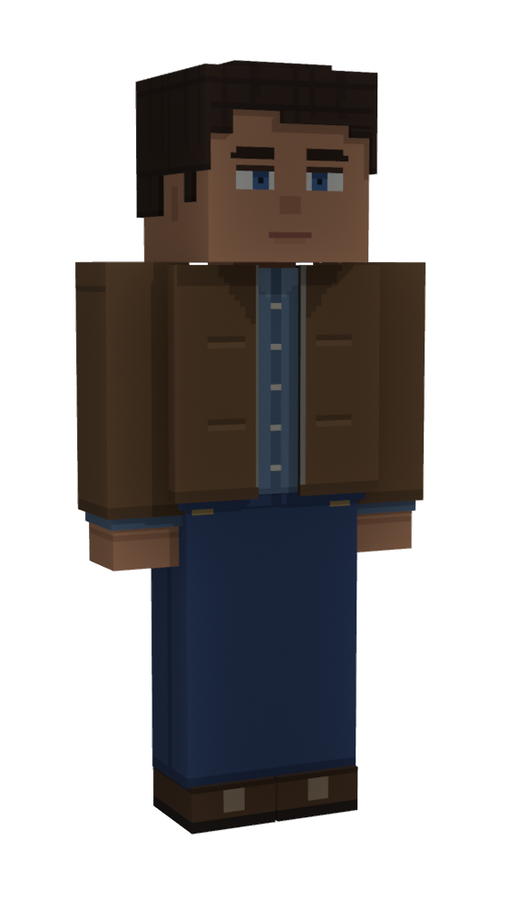

<!doctype html>
<html lang="zh">
<head>
<meta charset="utf-8">
<title>Character Creation V1</title>
<style>
@font-face { font-family: 'AFL Sans'; src: url('/assets/font/afl_sans_sc.ttf'); }
:root {
  --back: rgba(16,16,16,.62); --line: rgba(232,228,220,.28); --line-hi: rgba(232,228,220,.55);
  --text: #E8E4DC; --dim: #A8A49C; --off: #6C6A66; --acc: #E0A84A;
}
* { box-sizing: border-box; }
body { margin: 0; background: #141516; color: var(--text); font-family: 'AFL Sans', 'Microsoft YaHei', sans-serif; }
.sheet { width: 1920px; }
.screen { position: relative; width: 1920px; height: 1080px; overflow: hidden; }
.bg { position: absolute; inset: -40px; background: url('/design/ui/new_world_v1/source/bg_forest.png') center / cover; filter: blur(9px) brightness(.5) saturate(.85); }
.caption { background: #18191a; padding: 30px 40px 34px; min-height: 250px; }
.caption h1 { margin: 0 0 14px; font-size: 34px; font-weight: normal; }
.caption p { margin: 6px 0; font-size: 21px; color: #CFCBC3; line-height: 1.5; }
.abs { position: absolute; }
.panel { background: var(--back); border: 1.5px solid var(--line); border-radius: 12px; box-shadow: 0 3px 12px rgba(0,0,0,.22); }
.h { font-size: 22px; color: var(--dim); letter-spacing: 1px; }
.d { color: var(--dim); } .o { color: var(--off); }
.key { display: inline-flex; align-items: center; justify-content: center; min-width: 34px; height: 32px; padding: 0 9px; border-radius: 7px;
  background: rgba(232,228,220,.92); color: #16181A; font-size: 19px; margin-right: 10px; }
.btn { display: inline-flex; align-items: center; justify-content: center; height: 64px; padding: 0 34px; border-radius: 10px; font-size: 26px;
  background: var(--back); border: 1.5px solid var(--line); color: var(--text); }
.btn.main { background: rgba(232,228,220,.92); color: #16181A; border-color: transparent; }
.btn.small { height: 46px; padding: 0 20px; font-size: 21px; }
.seg { display: inline-flex; border: 1.5px solid var(--line); border-radius: 10px; overflow: hidden; }
.seg span { padding: 10px 30px; font-size: 24px; }
.seg span.on { background: rgba(232,228,220,.92); color: #16181A; }
.seg span.off { color: var(--off); }
.soon { font-size: 16px; color: var(--off); margin-left: 6px; }
.swatches { display: flex; gap: 14px; }
.sw { width: 54px; height: 54px; border-radius: 50%; box-shadow: inset 0 0 0 1.5px rgba(255,255,255,.2); }
.sw.on { box-shadow: 0 0 0 3px #16181A, 0 0 0 5.5px var(--text); }
.tiles { display: flex; gap: 12px; flex-wrap: wrap; }
.tile { position: relative; width: 116px; height: 116px; border-radius: 10px; background: rgba(8,9,10,.45); border: 1.5px solid rgba(232,228,220,.16);
  overflow: hidden; display: flex; align-items: flex-end; justify-content: center; }
.tile img { position: absolute; inset: 0; width: 100%; height: 100%; object-fit: cover; }
.tile .lb { position: relative; width: 100%; text-align: center; font-size: 18px; padding: 4px 0 5px; background: linear-gradient(transparent, rgba(0,0,0,.75)); }
.tile.on { border-color: var(--text); box-shadow: 0 0 0 1.5px var(--text); }
.tile.none { align-items: center; color: var(--off); font-size: 20px; }
.tile.none::before { content: ''; position: absolute; width: 60%; height: 2px; background: rgba(232,228,220,.18); transform: rotate(-35deg); }
.slotrow { display: flex; align-items: center; gap: 16px; padding: 12px 0; border-top: 1px solid rgba(232,228,220,.1); }
.slotrow:first-of-type { border-top: 0; }
.slotname { width: 92px; font-size: 22px; color: var(--dim); }
.slotname small { display: block; font-size: 16px; color: var(--off); margin-top: 2px; }
.floor { position: absolute; width: 520px; height: 90px; border-radius: 50%; background: radial-gradient(rgba(0,0,0,.45), transparent 70%); }
.ring { position: absolute; width: 560px; height: 130px; border-radius: 50%; border: 1.5px solid rgba(232,228,220,.14); }
.steps { display: flex; align-items: center; gap: 14px; font-size: 22px; }
.steps .n { width: 34px; height: 34px; border-radius: 50%; display: inline-flex; align-items: center; justify-content: center; border: 1.5px solid var(--line); font-size: 18px; margin-right: 8px; }
.steps .cur { color: var(--text); } .steps .cur .n { background: rgba(232,228,220,.92); color: #16181A; border-color: transparent; }
.steps .later { color: var(--off); }
.dim-block { background: rgba(232,228,220,.06); border-radius: 8px; }
</style>
</head>
<body>
<div id="out"></div>
<script>
// Character creation (appearance) concepts on B5 (docs/dev/block_mesh_v2_b_ingame.md 17). ?s=A: its own step before the
// survivor page; ?s=B: an "外貌" tab in the survivor page's person column. 1920 x 1080 at GUI scale 3. Female body and hair
// colour are not built yet (shown as coming); clothing colours come later (user 2026-10-26).
const S = new URLSearchParams(location.search).get('s') || 'A';
const TONES = ['#E8BEA0', '#C28C6A', '#A06C4C', '#764C34', '#523424'];
const HAIRS = [['short', '短发'], ['buzz', '寸头'], ['bald', '光头']];
const WEAR = [
  {slot: '打底衣', grid: '', items: [['shirt', '牛仔布衬衫']]},
  {slot: '外套', grid: '', items: [['jacket', '皮夹克']]},
  {slot: '裤子', grid: '在腿部格', items: [['jeans', '牛仔裤']]},
  {slot: '鞋', grid: '在脚部格', items: [['shoes', '皮鞋']]},
];
const PICK = {sex: 'm', tone: 1, hair: 'short', wear: {shirt: 1, jacket: 1, jeans: 1, shoes: 1}};
const el = h => { const t = document.createElement('template'); t.innerHTML = h.trim(); return t.content.firstChild; };

const sexSeg = () => `<span class="seg"><span class="on">男</span><span class="off">女<span class="soon">制作中</span></span></span>`;
const swatches = (size = 54) => `<div class="swatches">${TONES.map((c, i) => `<span class="sw ${i === PICK.tone ? 'on' : ''}" style="background:${c};width:${size}px;height:${size}px"></span>`).join('')}</div>`;
const hairTiles = (sz = 116) => `<div class="tiles">${HAIRS.map(([k, n]) => `<div class="tile ${PICK.hair === k ? 'on' : ''}" style="width:${sz}px;height:${sz}px"><span class="lb">${n}</span></div>`).join('')}
  <div class="tile none" style="width:${sz}px;height:${sz}px;font-size:17px">更多发型<br>以后加</div></div>`;
function wearRows(sz = 104) {
  return WEAR.map(w => `<div class="slotrow"><div class="slotname">${w.slot}<small>${w.grid}</small></div><div class="tiles">
    ${w.items.map(([k, n]) => `<div class="tile ${PICK.wear[k] ? 'on' : ''}" style="width:${sz}px;height:${sz}px"><span class="lb" style="font-size:16px">${n}</span></div>`).join('')}
    <div class="tile none" style="width:${sz}px;height:${sz}px">不穿</div></div></div>`).join('');
}
function figure(x, y, h, img = 'hero_full') {
  return `<div class="ring" style="left:${x - 280}px;top:${y + h - 78}px"></div><div class="floor" style="left:${x - 260}px;top:${y + h - 60}px"></div>
    `;
}
function header(title, line, right) {
  return `<div class="abs" style="left:60px;top:44px;display:flex;align-items:center;gap:40px">
      <span style="font-size:26px"><span class="key">Esc</span>退出到标题</span>
      <span style="font-size:40px">${title}</span><span class="d" style="font-size:24px;margin-left:-22px">${line}</span></div>
    <div class="abs" style="right:60px;top:50px">${right}</div>`;
}

function screenA() {
  return `<div class="screen"><div class="bg"></div>
    ${header('外貌', '定这个人的样子。', `<div class="steps"><span class="cur"><span class="n">1</span>外貌</span><span class="o">—</span><span class="later"><span class="n">2</span>背景和特质</span></div>`)}
    <div class="abs panel" style="left:60px;top:116px;width:500px;height:896px;padding:26px 30px">
      <div style="display:flex;justify-content:space-between;align-items:center"><span class="h">人</span><span class="btn small">⚄ 随机</span></div>
      <div class="h" style="margin:26px 0 14px;font-size:20px">性别</div>${sexSeg()}
      <div class="h" style="margin:34px 0 14px;font-size:20px">肤色</div>${swatches()}
      <div class="h" style="margin:34px 0 14px;font-size:20px">发型</div>${hairTiles()}
      <div class="h" style="margin:34px 0 10px;font-size:20px">发色</div>
      <div class="o" style="font-size:20px">以后加（现在是深棕）</div>
      <div class="o" style="position:absolute;left:30px;bottom:26px;font-size:18px;line-height:1.5">体型以后加。<br>开始以后外貌不能再改（发型以后可能能剪）。</div>
    </div>
    ${figure(960, 150, 800)}
    <div class="abs d" style="left:0;width:1920px;top:986px;text-align:center;font-size:20px">拖动转身 · 滚轮拉近</div>
    <div class="abs panel" style="left:1360px;top:116px;width:500px;height:896px;padding:26px 30px">
      <span class="h">开局穿着</span>
      <div style="margin-top:14px">${wearRows()}</div>
      <div class="o" style="font-size:18px;line-height:1.5;margin-top:14px">选中的衣服开局穿在身上，进游戏后就在 E 栏对应的格子里，脱下来是普通物品。颜色以后再加。</div>
      <div class="abs" style="left:30px;right:30px;bottom:26px;display:flex;gap:16px"><span class="btn" style="flex:1">上一步</span><span class="btn main" style="flex:1.6">下一步</span></div>
    </div>
  </div>`;
}

function screenB() {
  // the survivor page as it is (background | body + traits) dimmed to blocks; the person column gets 人物 / 外貌 tabs
  const rows = (n, h) => Array.from({length: n}, () => `<div class="dim-block" style="height:${h}px;margin-top:12px"></div>`).join('');
  return `<div class="screen"><div class="bg"></div>
    ${header('幸存者', '选一个背景，调机能，选特质。', `<span class="d" style="font-size:22px">剩余点数</span> <span style="font-size:44px">2</span><span class="d" style="font-size:26px"> / 4</span>`)}
    <div class="abs panel" style="left:60px;top:116px;width:440px;height:896px;padding:26px 24px;opacity:.55"><span class="h">背景</span>${rows(8, 78)}</div>
    <div class="abs panel" style="left:520px;top:116px;width:820px;height:196px;padding:26px 24px;opacity:.55"><span class="h">身体机能</span>${rows(2, 48)}</div>
    <div class="abs panel" style="left:520px;top:328px;width:820px;height:684px;padding:26px 24px;opacity:.55"><span class="h">特质</span>${rows(9, 56)}</div>
    <div class="abs panel" style="left:1360px;top:116px;width:500px;height:896px;padding:22px 26px">
      <div style="display:flex;gap:10px"><span class="btn small">人物</span><span class="btn small main">外貌</span><span style="flex:1"></span><span class="btn small">⚄</span></div>
      
      <div class="abs o" style="right:26px;top:390px;font-size:17px">拖动转身</div>
      <div style="margin-top:350px;display:grid;grid-template-columns:78px 1fr;row-gap:16px;align-items:center">
        <span class="d" style="font-size:20px">性别</span><span>${sexSeg().replace(/padding: 10px 30px/g, '')}</span>
        <span class="d" style="font-size:20px">肤色</span>${swatches(40)}
        <span class="d" style="font-size:20px">发型</span>${hairTiles(78).replace('更多发型<br>以后加', '更多<br>以后加')}
      </div>
      <div class="d" style="font-size:20px;margin:16px 0 4px">开局穿着</div>
      <div style="display:grid;grid-template-columns:repeat(4,1fr);gap:10px">
        ${WEAR.map(w => `<div style="text-align:center"><div class="tile on" style="width:100%;height:92px"></div><div class="d" style="font-size:16px;margin-top:4px">${w.slot}</div></div>`).join('')}
      </div>
      <div class="abs" style="left:26px;right:26px;bottom:22px;display:flex;gap:14px"><span class="btn" style="flex:1">随机</span><span class="btn main" style="flex:1.6">开始</span></div>
    </div>
  </div>`;
}

const CAP = {
  A: ['方案 A · 外貌单独一步（推荐）', [
    '「创建世界」以后先到这一页，定样子；「下一步」再到现在的幸存者页（背景、机能、特质、名字、开局）。两步都在出生前，确认后不能改。',
    '左栏：性别（女性身体接入前「女」灰着，标「制作中」）、肤色 5 档、发型（几何头发：短发、寸头、光头，以后加更多）、发色先只有深棕。右栏：开局穿着，每个格子一行，点衣服穿上、点「不穿」脱下；对应 E 栏的打底衣、外套、腿部、脚部。',
    '中间是大的人物预览，拖动转身、滚轮拉近，换衣服立刻看到。「随机」随机所有外貌和穿着。',
  ]],
  B: ['方案 B · 放进幸存者页的人物栏', [
    '不加新页面：幸存者页右栏顶部多两个标签「人物 / 外貌」。「人物」是现在的名字和开局摘要，「外貌」换成小号的性别、肤色、发型和开局穿着（只能穿或不穿，点格子切换）。',
    '好处是一步到底；坏处是右栏挤，人物预览只有 A 的四成大，以后加体型、发色、更多衣服就放不下了。',
    '左边和中间两栏（背景、机能、特质）不变，图里压暗只是为了突出右栏。',
  ]],
};
const s = S in CAP ? S : 'A';
const out = document.getElementById('out');
out.appendChild(el(`<div class="sheet">${s === 'A' ? screenA() : screenB()}<div class="caption"><h1>${CAP[s][0]}</h1>${CAP[s][1].map(p => `<p>${p}</p>`).join('')}</div></div>`));
</script>
</body>
</html>
